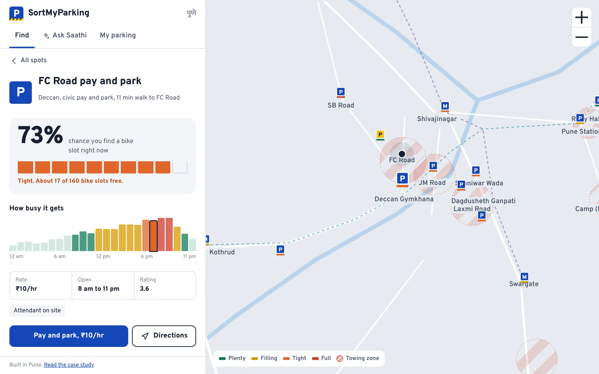
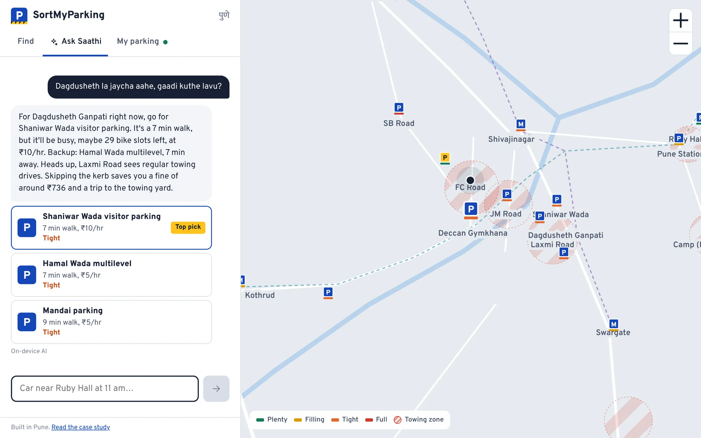
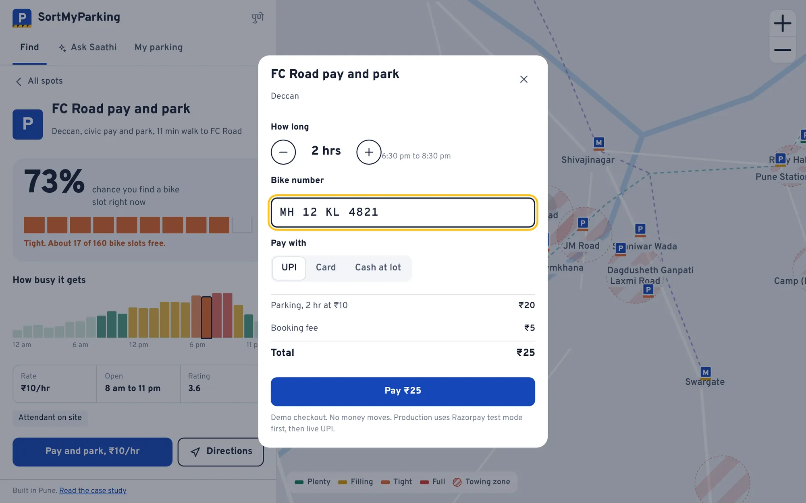
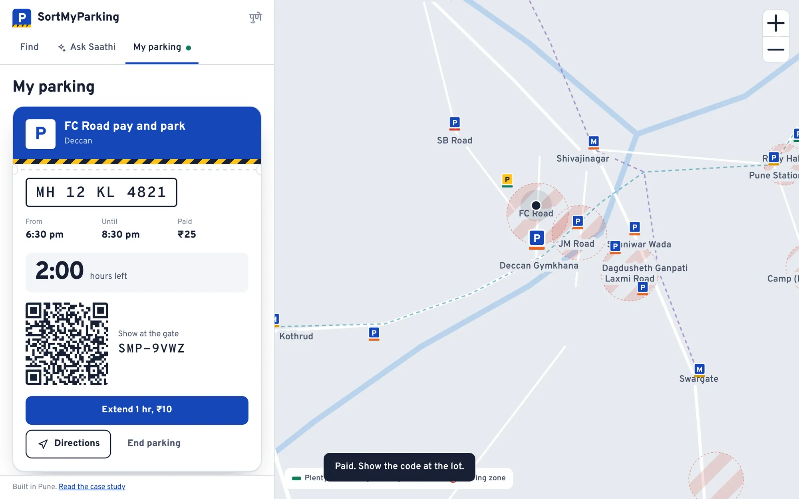
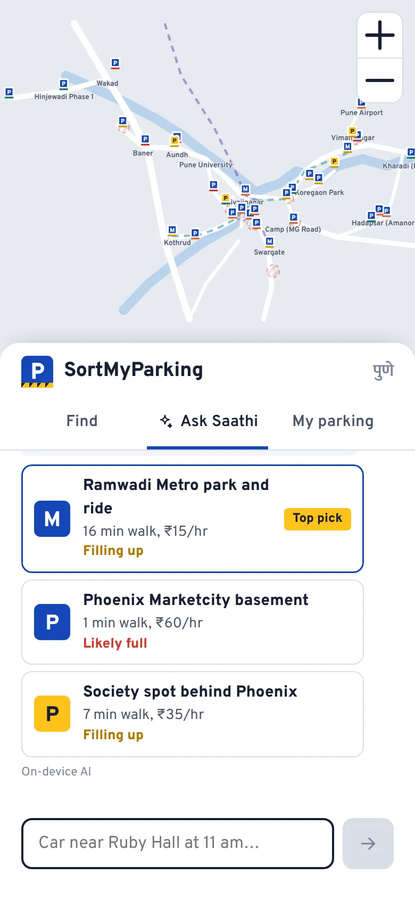
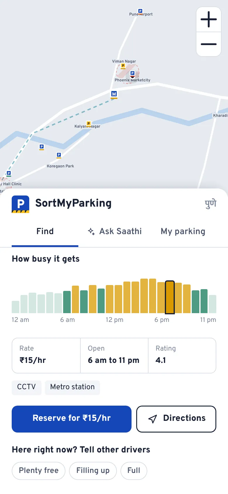

Summary
The problem. In Pune, the worst part of going out is the last 500 metres. You circle FC Road looking for a gap, leave the bike on the kerb, and come back to find it towed.
What I built. A web app that predicts your odds of finding a slot at 32 lots across the city, ranks them by odds, walk and price, and lets you reserve. It also has Saathi, an assistant you can ask in English, Hinglish or Marathi.
The bet. Drivers will plan parking before they leave if the answer comes in one question. And a ₹5 booking fee is an easy sell when a single tow costs over ₹700.
Where it stands. Live and working. No real users yet, so every number on this page is either cited public data or a clearly marked target. The validation plan is at the end.
The problem
Parking in Pune isn't a search problem. It's an uncertainty problem.
Most people know roughly where the lots are. What they don't know is whether there'll be space when they arrive, whether the lane they're eyeing gets towed, and whether going 30 minutes earlier would change anything.
So they do what everyone does. Drive in, circle, and take a chance on the kerb. Local reporting shows how that ends. Visitors at Balewadi High Street describe haphazard parking, towing in no-parking zones, and towing charges that feel arbitrary. At Market Yard, a rider was fined ₹219 after paying a ₹10 parking fee to an authorised vendor and keeping the receipt.
The cost isn't just money. It's the dread of not knowing, which makes people skip plans or take a cab they didn't want.
A tow in Pune costs 100 to 150 times what I'd charge to book a slot.
Pimpri-Chinchwad: ₹500 fine, ₹200 towing, ₹36 GST. Pune city no-parking fines start around ₹785 for bikes and ₹1,071 for cars.
Why Pune, why now
Three things are converging at once.
More vehicles, mostly two-wheelers. During Gudi Padwa 2025, 6,510 of the 10,170 new registrations were motorcycles. Bikes are where the kerbside towing pain lands hardest.
Enforcement is real. Towing drives are regular on the city's busiest streets, and repeat fines climb past ₹1,700 for bikes.
The city is finally going digital. PMC's Pay and Park policy was approved in 2018 and sat unused for seven years. It's now being trialled. Researchers at Pune International Centre argue the 2016 parking policy is outdated and call for demand-based pricing and digital platforms. When the city starts charging on FC Road, people will search for how it works. That's the moment to be the answer.
Who it's for
These four people are hypotheses. I built them from public reporting and from living in Pune, not from interviews yet. Interviews come next, and they'll confirm, merge or kill these.
| Who | Situation | What hurts | Done looks like |
|---|---|---|---|
| The bike commuter 26, IT in Hinjewadi | Daily office runs, weekend FC Road plans | Towed a couple of times a year. Never knows which lanes are safe | Parks in under 3 minutes, never towed |
| The family driver 34, car, Kothrud | Laxmi Road shopping, temple visits with parents | Old city lanes, parents can't walk far | Knows the closest legal lot before leaving home |
| The weekend driver 29, car, Viman Nagar | Phoenix on Saturdays, airport runs | Basement queues at peak | Arrives when it's easy, or skips the queue |
| The spot owner 52, society flat, Aundh | Her parking spot sits empty 10 am to 7 pm | Wasted asset | Earns a few thousand a month, safely |
Jobs to be done
- Before I leave, tell me where I'll leave the vehicle, so I don't circle.
- When I'm about to park on the street, tell me if I'm about to get towed.
- When nothing's close, give me a smart way out: go earlier, try the next lot, or park at a metro station and ride in.
- When my spot sits empty, let me earn from it without the hassle.
The product
One promise drove every screen: answer "where do I park?" in one step, with an honest level of confidence.
Find: odds, walk and price in one list
Pick a destination, car or bike, and when you'll arrive. Lots are ranked by your chance of getting a slot, the walk and the price. Availability shows as ten painted bays filling up, because that's how a lot actually looks.

Saathi: ask the way you'd ask a friend
"Dagdusheth la jaycha aahe, gaadi kuthe lavu?" gets a real answer. That's Marathi for "I'm going to Dagdusheth, where do I park?" Saathi picks a lot, names a backup and warns you about towing. Tap any pick and the map, time and vehicle all carry over.

Reserve, or pay and park
Private lots and malls can be reserved. Civic lots are pay on arrival, because a reservation the lot doesn't know about is worse than none. Checkout validates Indian number plates, including BH series, and shows the fee clearly. The ticket has a QR code, a countdown and one-tap extend.


The smaller things that matter
- Street parking saver. Save where you left the bike. It checks the spot against towing zones and walks you back later.
- One-tap reports. "Plenty free", "Filling up" or "Full" updates that lot's estimate for everyone for 45 minutes.
- Two fake doors. A ₹99/month Pass waitlist and a host earnings calculator. They measure demand before I build either.


How the AI works, and where it doesn't
The easy version lets the model answer everything. For parking, that's dangerous.
A chatty model that invents "plenty of space at FC Road" sends someone into a towing zone. So I split the job into three layers, and the language model only gets the part it's good at.
Understand
On-device parser reads place, time, vehicle and wants ("covered", "cheapest", "udya", "5 baje", "from Kothrud").
Decide
A fixed scoring model ranks real lots on predicted odds, walk, price and preferences. Same question, same answer.
Talk
Llama 3.3 70B on Groq rewrites the answer warmly. It can only pick from lot IDs we send it.
Guardrails
- The model never sees the whole city, only the 6 best candidates with their real numbers.
- Unknown lot IDs get dropped twice, once on the server and once in the app.
- If the model is slow (9 second timeout), down or out of free quota, the on-device layer answers instantly. Users never see an error.
- Every reply is labelled "Live AI" or "On-device AI", so I can compare the two once real people use it.
The availability model
Each lot has a demand profile: office, mall, market, nightlife, transit, college, hospital or residential. Occupancy comes from that curve by hour and weekday or weekend, plus city events like Ganeshotsav, plus fresh driver reports.
Two rules make it honest. Odds never show 100%, because it's an estimate. And odds drop as a lot fills past 75%, since a lot with 17 free bays out of 160 still means a hunt.
Design choices
I wanted it to feel like it belongs on a Pune street, not like a template.
- Visual language from road furniture. Parking-sign blue, black-and-yellow kerb stripes, and Overpass, a typeface descended from highway signage. The kerb stripe only appears where it means something: towing warnings and the ticket.
- A schematic map instead of a map SDK. It's drawn from coordinates, loads instantly, costs nothing and needs no key. Turn-by-turn directions go to Google Maps, which everyone already uses.
- Bays, not a progress bar. Ten painted bays read faster than a percentage and look like the lot itself.
- No login to look. Nobody should sign up to find out where to park. A number plate is only asked for at checkout.
- Local language, local defaults. Saathi understands Marathi and Hinglish. A day with no time means 6:30 pm, because that's when Pune goes out. Office trips default to morning.
What I built and what I cut
The rule: ship what proves the core bet, fake what tests demand, cut what's expensive and unproven.
| Feature | Why | Call |
|---|---|---|
| Odds, ranking, busy chart | The core promise. Without it this is just a list of lots | Built |
| Saathi assistant | One question instead of five filters. Tests whether people plan ahead | Built |
| Towing zones and street saver | The sharpest pain, and the reason to pay ₹5 | Built |
| Driver reports | Cheapest live data source, and future training data | Built |
| Reserve and ticket | Proves the flow end to end. Payments are a demo | Built |
| Pass and host listings | Real demand unknown. A waitlist answers that for free | Fake door |
| Live payments | Razorpay test mode first, after lot partners agree to honour bookings | Next |
| Accounts and sync | Supabase schema is ready. Not needed to test the core bet | Next |
| Real-time sensors | Expensive and slow to deploy. Reports get most of the value early | Cut |
| Full map SDK | Cost and keys for little gain over a Google Maps handoff | Cut |
Making money
The user pitch comes first: one avoided tow pays for years of booking fees.
| Stream | How | Why it fits |
|---|---|---|
| Booking fee | ₹5 bike, ₹10 car | Tiny next to a ₹736+ tow |
| Host commission | 15% of host-spot bookings | Supply nobody else has |
| Pass | ₹99/month: no fees, tow alerts, monthly office spots | Turns commuters into subscribers |
| Lot partners | Promoted placement, clearly labelled | Lots want to fill quiet hours |
| Offices | Monthly parking near Hinjewadi, Kharadi, Magarpatta | Companies already buy this, badly |
Running costs stay close to zero at this stage. Vercel, Groq, Supabase and PostHog all have free tiers that cover early traffic.
How I'll know it works
North Star: successful parks per week. A park counts if someone went to a lot we suggested and didn't report it full, or reserved and checked in. It captures both halves of the value: we found a spot, and they trusted us enough to go.
| Stage | Metric | Target to test |
|---|---|---|
| Activation | Sets a destination in the first session | 60% |
| Engagement | Opens a lot after searching | 45% |
| Conversion | Reserves or pays after opening a lot | 12% |
| AI quality | Saathi answers where the user opens a pick | 40% |
| Trust | Driver reports that agree with our prediction | 70% |
| Retention | Week 4 return rate for people who booked | 25% |
Guardrails: zero tows for people who followed our advice, first useful answer in under 2 seconds, and model cost under ₹0.10 an answer.
Every metric is already tracked as an event in the app and flows to PostHog once its key is set.
What's not good enough yet
I reviewed my own work the way I'd review a teammate's. Some issues I found and fixed during the build. The rest are open, and I'd rather name them than have an interviewer find them.
- Biggest gap
Reservations aren't real yet. No lot has agreed to honour a booking. A reservation the attendant doesn't know about is worse than none, so live bookings wait for the first lot partner. Until then, "Reserve" is a flow test.
- Biggest gap
No users, so no evidence. Personas, targets and the revenue model are all assumptions. The product is built to collect evidence, but it hasn't yet.
- Risk
The host-spot bet may hit society rules. Many housing societies restrict outsiders using residents' parking. This could kill the supply idea, or limit it to deals made with the whole society. I need to test this with residents' associations before building anything more.
- Weak
The availability model is unproven. The curves are educated guesses, and lot capacities and rates are demo values. Real accuracy is unknown until I compare predictions with real visits.
- Weak
Marathi in, English out. Saathi understands Marathi, but the interface doesn't speak it. A Marathi interface is on the roadmap.
- Weak
Towing zones are a fixed list. They come from news reports, not live data. They should come from user tow reports.
- Trade-off
The schematic map is great for choosing, poor for arriving. It relies on handing off to Google Maps for the last mile.
- Fixed
Saathi recommended a closed lot at night and claimed hundreds of free slots. Found while reviewing screenshots. Closed lots now drop out of the ranking, and Saathi says so plainly.
- Fixed
Odds and labels disagreed. A lot showed "95% chance" next to "Tight". Odds now fall as a lot fills, so the two signals tell the same story.
- Fixed
Saathi picked a lot 35 minutes away when nothing matched every filter. Now it offers a close lot that misses one ask, says which ask it misses, and tells you when your first choice frees up.
Validation plan
Six weeks to turn assumptions into evidence. The results column stays empty until there's real data.
| Test | How | Pass if | Result |
|---|---|---|---|
| Problem interviews | 15 to 20 Pune drivers across the four personas | Most have circled or been towed in the last 6 months | Pending |
| Survey | Short form shared in college and society groups | 200 responses. Searching time and tow frequency measured | Pending |
| Usability | 5 people, 3 tasks: plan a Phoenix Saturday, find bike parking on FC Road, reserve and extend | 4 of 5 finish each task unaided | Pending |
| Prediction check | Visit 5 lots at 3 times of day, compare with the app | Level right 7 times in 10 | Pending |
| Pass fake door | Waitlist button in My parking | 5% of weekly users join | Pending |
| Host demand | Earnings calculator plus 3 residents' association conversations | One society open to a pilot | Pending |
Roadmap
- Next 6 weeks: run the plan above, add accounts, set up Razorpay test mode, send "15 minutes left" alerts.
- Next quarter: first 5 lot partners, first host pilot, learned availability curves, Marathi interface.
- Later: PMC Pay and Park integration, office parking deals, EV charger booking.
How it was built
I owned the product: the problem, research, scope, flows, design direction, metrics and every trade-off on this page. I built it with Claude as my coding partner, which let me go from idea to a live, deployed app in about a day. I reviewed every flow, tested it on desktop and mobile, and found and fixed the bugs listed above.
Everything runs on free tiers, on purpose. A side project should prove the idea before it costs anything.
| Need | Tool |
|---|---|
| App | React 18 and Vite |
| Hosting and API | Vercel (static site plus one serverless function) |
| Language model | Groq free tier, Llama 3.3 70B |
| Analytics | PostHog free tier |
| Database, next | Supabase with PostGIS, schema already written |
| Map | Hand-drawn SVG from coordinates, Google Maps for directions |
Sources
- Pune RTO FY 2025-26 performance report, Punekar News
- Pune's vehicle count crosses 39 lakh, Free Press Journal
- How India moves: Pune's roads and two-wheeler traffic, Down To Earth
- Gudi Padwa 2025 vehicle registrations, Punekar News
- PMC Pay and Park trial on six roads, Free Press Journal
- Pimpri-Chinchwad towing fines, The Bridge Chronicle
- No parking fine in Pune, TATA AIG
- Towards a new parking policy for Pune, Pune International Centre
- Parking chaos at Balewadi High Street, Free Press Journal
- Vehicles towed despite paying the parking fee at Market Yard, Free Press Journal